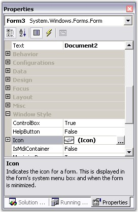

This section guides you in setting the text and icons for the tabs.
Tab Text
The text of the tabs can be set by directly setting the Text property of the form, if the tabbed window is going to be a normal form.
Icon Settings
The below properties controls the appearance and behavior of the icon settings.
|
TabbedMDIManager Property |
Description |
|
Icon |
Gets / sets icons for tabs. When the Icon property is clicked, the browse page will be displayed, through which the user can select the icon to be displayed. |
|
UseIconsInTabs |
Gets / sets the value which determines whether icons should be added to the MDIChild. |
|
ImageSize |
The size of the image or icon that you want to add to the tabs can be set using this property. |
|
[C#]
this.Text = "Tabbed MDI Demo (Syncfusion Inc.)"; this.Icon = ((System.Drawing.Icon)(resources.GetObject("$this.Icon"))); this.TabbedMDIManager.UseIconsInTabs = false; this.tabbedMDIManager1.ImageSize = new System.Drawing.Size(16, 16); |
|
[VB.NET]
Me.Text = "Tabbed MDI Demo (Syncfusion Inc.)" Me.Icon = CType((resources.GetObject("$this.Icon")), System.Drawing.Icon) Me.TabbedMDIManager.UseIconsInTabs = False Me.TabbedMDIManager1.ImageSize = New System.Drawing.Size(20, 20) |

Figure 1099: Text and Icon Properties in the Properties Grid